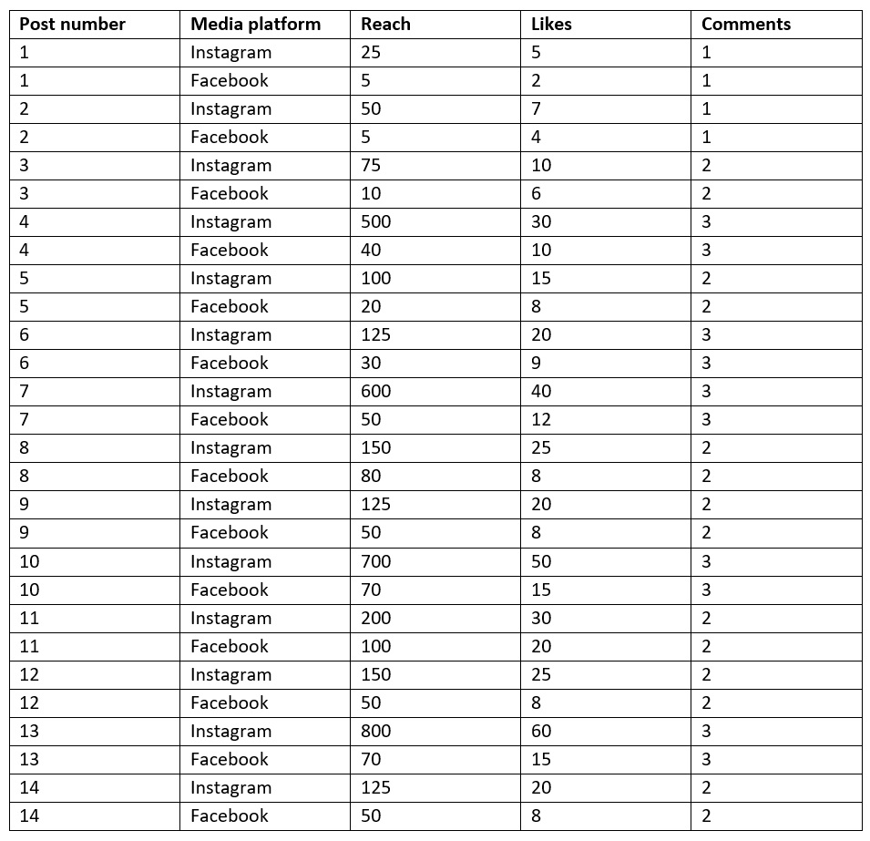
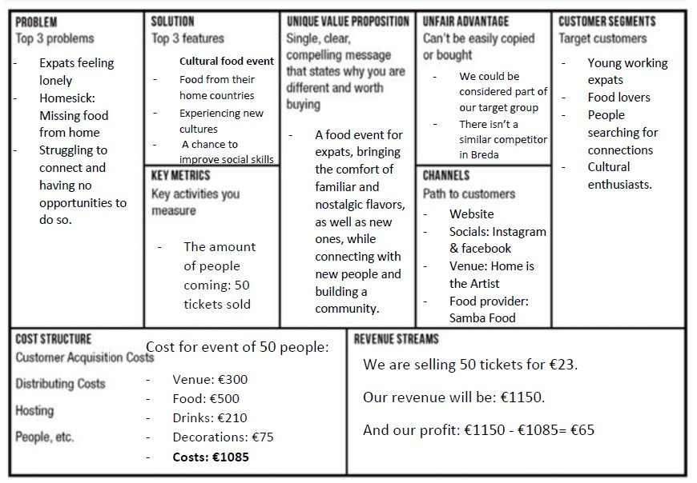
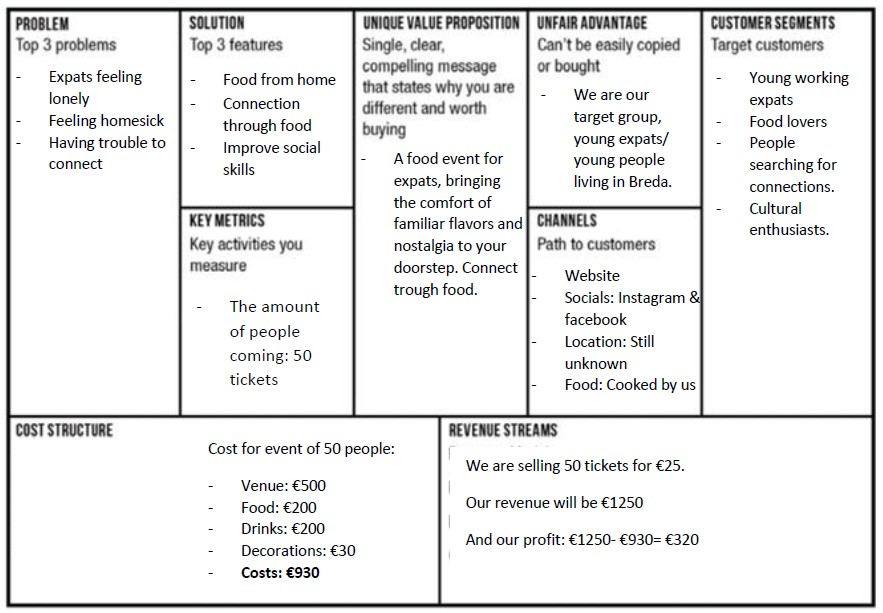

General Information
This branded website is publicly available at themeltingpot.github.io/tmp/
This website was created by:
- Esmee de Kock | 212913
- Flávia Piason | 212299
- Hinte Wibbens | 212376
- Mónica Gomes | 212191
Content
Please clarify here the match between students and pieces of content. Make sure that you provide a link to the correct page within the website
| # | Student ID | Value | Name and link of content |
|---|---|---|---|
| 1. | 000000 | Value | Content title |
| 2. | |||
| 3. | |||
| 4. |
Production
Design Elements
Please provide a list of design elements alongside their justifications:
-
COLOR PALETTE
The color palette for The Melting Pot has a variety of colors, from cold to warm, to represent the diversity we strive for in our community. It is colorful but has a serious tone to portray the age of our target audience, which consists of young, but working expats. These colors convey the cozy feeling we want our audience to experience.
- #472412 - Brown is an earthy color, often seen as nurturing and comforting for reminiscing the natural world and creating a sense of warmth, safety and comfort in customers, which is essential to us. In addition, brown is a versatile color that works well with a wide range of other colors, which allows us to create different color schemes depending on the message we want to convey. This woody brown reflects the cozy and welcoming atmosphere we strive to bring to expats.
- #F49737 - Orange is associated with optimism and energy. It can be very valuable when conveying a message of positivity and evoke a sense of excitement about our brand. It's an attention-grabbing and warm color that really pops when combined with the teal and brown tones in our palette. Furthermore, the orange color is an icon of the Dutch culture and part of the identity of Breda, the 'Oranjestad', term often used to describe it and that can be literally translated as 'Orange City'.
- #FBCEA4 - This is a lighter tone of the previous color, which is orange. Therefore, its meaning is exactly the same as the darker tone. We decided to include it because it would make blending and combining colors easier and our visuals more harmonic, since dark tones need to be balanced by lighter ones.
- #C4D8D1 - This is a lighter tone of the following color, which is teal. Therefore, its meaning is exactly the same as the darker tone. But we decided to include it because it would make blending and combining colors easier and our visuals more harmonic, since dark tones need to be balanced by lighter ones. Moreover, the lighter teal evokes a deeper serenity.
- #036460 - The color teal is a combination of the calming properties of blue and the renewal qualities of green. We want expats to feel calm in their new home and we will be a safe haven for them, during the harsh process of starting a new life abroad. Teal is a color of revitalization, which is exactly what we want to bring to our target audience. The Melting Pot is a breath of fresh air among the chaos that expats encounter in their daily lives, trying to adapt to their job and responsibilities, while often feeling lonely and homesick.
-
FONT CHOICES
Averia Serif Libre Bold - we chose this font for the titles on our website because it has a vintage, rustic aspect to it, which is the feeling we want our brand to have and, therefore, we try to evoke through our visual identity. This font is also used as the main font in our logo. We want people to perceive The Melting Pot as warm and welcoming, almost reminding them of homely emotions, and believe that this font puts out these characteristics very well, while being strong and memorable.
Montserrat Semibold - this font also has a vintage aspect to it, but with a bit more of a straight and modern flare. It is easier to read, because it is less robust, and blends well with our title font.
Open Sans - this font is a recommended pairing font for the font used in our titles. It is even easier to read than Montserrat, which is ideal for a body font. We chose a simpler font for the body not only due to its readability, but also to balance out the title font, which is bold and eye-catching.
-
USER INTERFACE PATTERNS
Carousel – we chose to use a carousel for three reasons:
- Efficient use of space: carousels allow for the display of multiple pieces of content at once, in a compact space. We believe that this is very important, because people will be able to see the most important information about our brand as soon as they visit our home page, through the visuals we will present on the carousel.
- Visual appeal: carousels are visually interesting and can add an element of design to the website. We customized our carousel with images that represent our brand visually and emotionally and stated that the carousel made our homepage significantly more dynamic and attractive to potential consumers.
- Highlighting important content: using a carousel allowed us to insert the most relevant information about our brand, such as what it consists of and what our next food event edition will be, right on the home page, as the first thing people see. Displaying this information with images and eye-catching visuals emphasizes the message and makes the experience with our website more interesting.
Cards – we chose to use cards for the 'The Team' section, where we present the people behind our brand, for three reasons
- Flexibility and variety: cards are a versatile interface pattern that can be used to display a variety of content types, including text and images. They can also be used in different sizes and layouts to accommodate different devices and screen sizes.
- Visual appeal: cards can be designed to be visually appealing and eye-catching, making it more likely that users will engage with the content.
- Organization: cards have the ability to help make content easier to scan, by breaking it up into smaller, more digestible chunks. This can make it less tiring for users to read information and simpler to quickly find the content they are looking for.
Grids – we chose to use grids in the "Values" section for the following reasons
- Visual appeal: the grids used display our text in a more aesthetically pleasing manner, making it nicer to read through the information. Furthermore, we used the colors of the brand to reinforce brand identity and make it consistent with the rest of the website.
- Organization: grids allow better organization of content, since it provides a clear separation between different topics, which creates alignment and order. As a result, it is easier for users to understand the content.
- NAVIGATION & CONTENT STRUCTURE
- We chose to have multiple pages on our website in order to improve user experience. Dividing content into different pages helps organize information in a cohesive way, which makes it easier for users to find what they need and to navigate through the website. Having all information displayed on a single page can make users overwhelmed and confused, leading to a poor experience. In addition, large amounts of content on one page can result in slower loading times, which might cause frustration in users.
- Home page: the first thing you see when visiting our page is a carousel which displays three pictures that define The Melting Pot very well. The first two are a food event and a wine toast, representing the unique experience we want to provide our community with. The third one is a picture of Rio de Janeiro, to announce our first edition, Brazil themed. When scrolling down, we have more detailed information about our brand, what inspired it and the goals behind it. Then, we provide more information about our brand's service, the food event itself.
- About page: on this page, we have our brand mission and our brand values, which communicate our purpose and the beliefs that guide us. After those, we have a 'Meet the Team' session, introducing the four members of our team and what motivates them to be part of The Melting Pot.
- How the website design fits the values and personality of the brand: The way our website is designed thoroughly represents our brand identity. We portray The Melting Pot as a young and fun, yet mature and sophisticated brand. We want people to feel welcome and joyful, while being part of a diverse community and exploring different cultures. In our website, we display information in an organized and somewhat minimalist manner, to portray this slight seriousness. On the other hand, we make use of our color palette and pictures that match this palette to represent how our events will look like and what we will bring to Breda. The combination of these aspects creates a balance and makes our website bright and aesthetically pleasing, while still being in accordance with our target audience – young working expats – and giving them the comforting feeling we aim for.
- How the website design fits the marketing and communication strategy: The design of our website fits our marketing and communication strategy because we kept consistent branding – with our logo, color palette and typography – which reinforces our brand identity and, therefore, effectively communicates our messages and values to the target audience. Moreover, our website is visually appealing, clear and intuitive to use, making the user experience with our brand very positive and encouraging them to engage with The Melting Pot. Additionally, our website also highlights important call-to-actions, such as contact information, links to our social media accounts and invites to join The Melting Pot's next edition. These calls-to-action can help guide visitors towards the desired action and support our brand's marketing and communication goals.
- How the website design help showcase the unique value proposal of the product: The Melting Pot's website communicates our service's unique value proposition in a clear and concise manner, with headlines, subheadings, and copies that highlight our event's key features and benefits. Moreover, visuals are also a very effective way to communicate those assets and are a more engaging type of content and easier to understand. For this reason, we heavily rely on the use of images to showcase the experience that our service will offer the users. Both the visuals and the language we use speak directly to our target audience's pains and needs, showing them how The Melting Pot can improve their lives or solve their problems.
Credits
- UX patterns “Bootstrap” library (getbootstrap.com/docs)
- Unsplash images
- Table with people: https://unsplash.com/photos/W3SEyZODn8U
- Wine: https://unsplash.com/photos/tAH2cA_BL5g
- Brazil: https://unsplash.com/photos/7F65HDP0-E0
- Food: https://unsplash.com/photos/32kl7FPz2Gc
Testing Report
- Testing goals
- To evaluate the website's usability, including navigation, accessibility, and user interface.
- To assess the website's ability to effectively communicate the brand's mission and values.
- To identify any areas of confusion or inconsistencies in the website's content and messaging.
- To gather feedback from the target audience on their overall experience with the website.
- Testing methods
- Participants - We tested our website with a total of 4 people, who were all female expats aged between 19 and 25. Therefore, their age was not the most compatible with our target audience, of which the age is 25 to 35 years old. However, we believe that the insights we gained from the tests with this group were very valuable and useful to understand how our website fulfills our target group's needs and wants, as well as how good of an experience it provides.
- Setting - All interviews were conducted on campus. Each time, we used one of our team members' laptops to display the website and allow the participants to go through it.
- Protocol - We instructed the participants to go through the website as if they were a potential customer, trying to find out more about our brand, what we offer and what we stand for. The evidence we have are pictures of each testing session.
- Results
- During the testing sessions, the 4 participants provided us with very valuable feedback about their experience with our website. These are:
- The navigation bar was not floating and, as a result, the participants had to scroll back up to find this bar when they wanted to visit a different page of the website.
- Two of the participants mentioned that the upper section of the 'About' page looks a bit too simplistic and not as colorful as the parts of the website.
- The colors and the visuals are aesthetically pleasing and made the participants immediately understand what The Melting Pot is about. It also made them feel connected to the brand and want to join the events.
- The participants said that the website was easy and intuitive to use and all of them found their way through it with no struggles.
- The carousel was a very nice addition and made the 'Home' page more appealing, but it was glitching sometimes.
- During the testing sessions, the 4 participants provided us with very valuable feedback about their experience with our website. These are:
- Future improvements
- We would have changed the navigation bar and made it float, so that there's no need to scroll all the way back up to click on a different page.
- We would have developed a mobile-friendly website, because when opening it with a cell phone it does not work properly, nor does it look good.
- We would have made a separate page about the first edition of The Melting Pot, which will be themed around Brazil. We would have linked this page to the button that is on the Brazil part of the carousel on the home page, so that people could access more detailed information about it in a separate page.
- We would have brainstormed and applied an element on the upper part of the 'About' page, in order to make it more visually appealing.
Marketing
Context of campaign and promotional activities
Explain the context of the campaign is (What the campaign is about, what the message is, which promotional activities were executed). In addition, present the objectives as mentioned in the Communication Media Plan.
Explain and justify the chosen channels/platforms used and show there is a solid connection to the objectives established in the Communication & Media Plan.
Message: We want to bring expats together through sharing culture and food, giving them the opportunity to make more friends and to make them feel more at home through bringing their home to them.
Promotional activities executed: - For the promotion, we made an Instagram and Facebook account and posted on these platforms two times a week. We have created posts (images and reels) teasing and explaining what our brand is about. In addition, we have also created posts about what our product will be about.
Target Audience
- Expats in Breda (young working people)
- 25 to 35 years old
- All genders
Communication objectives
Reach & Response
For the reach and response, we want to achieve the following numbers per post.
Effect: We want our target audience to feel excited about our brand and willing to keep following its journey.
Media Tatics
Channels mostly used by target group:
- YouTube (US based) 77% of internet users of ages 26 - 35-year-old use YouTube – with the largest ad reach to be in the Netherlands with 95% (Hootsuite)
- Instagram 34% of internet users of ages 25 - 29-year-old use Instagram (Target Internet) - (US based) 54% of the 25–29-year-olds use Instagram (Business Insider). Of all the Instagram users, the ages of 25-34 is largest age group with a percentage of 31.2%. (Sprout Social)
- TikTok (US based) of all the TikTok users, the ages of 20-29 are the second biggest group of users with 29.5 % and the ages 10-19 are the biggest group of users with 32.5%. The ages 30-39 have a percentage of 16.4%. (WallarooMedia)
- Snapchat the age group 25 to 34-year-olds are 22.8% of Snapchat’s total users. 54% of the 25 to 29-year-olds use Snapchat (Business Insider)
- Facebook For Facebook, the largest age group of users is the one of 25 to 34, which corresponds to 31.5% of the total users.
Channels we will use and why:
We used Facebook and Instagram as our promotion platforms. Those are the socials that based on the percentages and on the Statista survey have the most usage by our target audience.
We will not be using YouTube, TikTok and Snapchat. YouTube users typically do not care about business videos and use YouTube for entertainment purposes instead, such as watching TV shows, music videos or a web series. TikTok and Snapchat are used much less frequently by the target audience's age group compared to younger age groups (Chilukuri, 2019). Furthermore, Snapchat does not allow sharing content publicly for free.
Planning
Content calendar (sent by email to the lecturer) - posting Monday and Thursday 11am
Learning Points
- We have found out that reels/videos get a lot more reach than normal picture posts, especially if popular sounds are being used.
- Even though the reels/videos got a lot of reach, mainly from non-followers, in most cases they didn’t engage or flow us, so we learned that we needed to have tried different ways to engage with them so we could find out what worked best.
- We learned that there is an opportunity to reach the target audience via Facebook groups and that we missed it due to our lack of knowledge and bigger focus on Instagram.
- We learned that the posting times are very important. We saw that when we did not follow our posting days, we got less reach and response. The same with missing our posting days.
- We learned that we could post more often with more variable content.
- We learned that it is harder to start up and get a following on Facebook than on Instagram.
Future Planning
By promoting the Melting Pot, we made use of the two media channels Instagram and Facebook. We made two posts per week and posted those on both channels. Due to that we had the same posts on both channels. We noticed very quickly that it was easier to reach people and have them engage through Instagram than through Facebook. However, the audience reached was not only our target audience, as we reached a lot of friends and family since we promoted our brand on our personal social media as well.
If we were to continue this project and work this brand out in the real world, we would make use of the paid advertisement within both media platforms to make sure the posts reach the right audience. Together with that, we would try to make different posts for Facebook than for Instagram to see if that would have more effect and get us more reach and engagement within the Facebook platform.
Something we would do differently in the future, is to create and produce a lot of content beforehand so that we can always post it on the right days and times. Since we mostly created the content on the day that it was supposed to be posted, we did not post it at the right times and sometimes not even on the right days. Together with that we would post more often with more variable content, since we only posted once or twice a week.
Another thing we would do differently is to also focus a bit more on Facebook and try to post our pictures and videos in expats Facebook groups in order to see if that would give us more reach and response.
Professionalism


Social media Insights:


Sources
https://sproutsocial.com/insights/new-social-media-demographics/#instagram-demographics
https://www.businessinsider.com/social-platforms-are-most-popular-among-18-to-29-year-olds-2018-3?international=true&r=US&IR=T
https://blog.hootsuite.com/social-media-demographics/
https://www.targetinternet.com/resources/how-different-age-groups-are-using-social-media
https://wallaroomedia.com/blog/social-media/tiktok-statistics/
https://datareportal.com/essential-snapchat-stats
https://www.statista.com/statistics/697047/share-millennials-actively-using-social-media-the-netherlands-by-social-network/
https://www.hippovideo.io/blog/youtube-business-video-marketing/amp/
https://www.socialpilot.co/blog/best-time-to-post-on-instagram
https://statusbrew.com/insights/best-times-to-post-on-social-media/#is-there-a-global-best-time-to-post-on-social-media
Management
Lean Canvas
Problem
- For this project, we started with conducting interviews. We all talked to a total of eight expats who fit in the target group, and they all had many points in common, from which we selected the three more prominent ones. First of all, they feel lonely after moving to a new country, usually by themselves and leaving their loved ones in their home country. Secondly, they feel homesick and miss their family, friends, homely foods and the weather. We found out that in foreign countries it is more normal and frequent to gather with friends and family to go out for dinner. Here, in The Netherlands, it is not that common, maybe because of the high prices. The last big problem we found during the interviews is that it is very difficult for new expats to find new people to connect with. They think it is hard to approach people, especially when they are locals or are already settled in The Netherlands, with a solid friend group and more connections.
Solution
- The solution for the target group's problems, which are loneliness, homesickness and lack of opportunities to connect with new people, is a cultural event where young working expats can connect through traditions and food. Our brand is focused on events where we will present a different country in every edition. We will serve the country's traditional food, play local music, have typical activities, bringing this culture not only to the expats who come from the specific country, but also to the ones who are curious, want to learn and broaden their world view. This way, we will provide people who are new to The Netherlands with a unique experience with like-minded expats, and a chance to find those new connections they long for.
Customer segments
- Main segment: 20-35 y/o expats living in Breda (young working people), from all genders
- Food lovers
- Poeple searching for connections
- Culture enthousiasts
Unique value proposition
- The key metrics we identified the number of tickets sold. We want to host the event for a total 50 people, which is the ideal amount for an event like The Melting Pot. 50 people can fill a space and create a very nice environment, but it is not too much in a sense that it will be too overwhelming to approach new people and socialize. We want to create a safe space for different people who come from different backgrounds, where they feel comfortable to get to know each other. We will measure our success based on the quantity of tickets sold and our goal is to sell all of them on every edition.
Unfair advantage
- The unfair advantage we have is that we could be considered a part of our target group. A part of our team are expats who came to The Netherlands almost two years ago and, therefore, they know exactly what the struggles are. Being part of our own target group could be an asset when looking and reaching for potential customers, knowing a lot about their daily life, behaviour and wants and needs. Moreover, we all currently live in Breda and chose to do the event there, which can also be considered an unfair advantage since we know the city and many people who live there very well.
Channels
- The channels we are using are Instagram, Facebook, the brand's website, and word-of-mouth, talking to our friends and families and trusting that people will also spread the word about The Melting Pot. We opted for using these socials because we researched and found that these are the most used platforms and the most effective to reach our target audience. We struggled to find a venue, but later on in the project we found a beautiful studio called Home Is The Artist. Our supplier is a food stand we found at the Foodhall in Breda, called Samba Food. For the future we want to leave out Facebook from our marketing strategy, because we noticed that this platform is not used as commonly anymore. For this reason, we deleted Facebook from the second and final version of the Lean Canvas. Our Instagram strategy worked better, so from now on we will focus on that.
Key metrics
- The key metrics we identified the number of tickets sold. We want to host the event for a total 50 people, which is the ideal amount for an event like The Melting Pot. 50 people can fill a space and create a very nice environment, but it is not too much in a sense that it will be too overwhelming to approach new people and socialize. We want to create a safe space for different people who come from different backgrounds, where they feel comfortable to get to know each other. We will measure our success based on the quantity of tickets sold and our goal is to sell all of them on every edition.
Revenue streams
- We are selling 50 tickets for €23. Our revenue will be: €1150.And our profit: €1150 - €1085 = €65.
- At first, we wanted to make the tickets €25, this way we would have more profit. But in the second lean canvas we changed this to €23 because we concluded out of the solution interviews that €25 was too much for our target group.
Cost structure
- Renting Home is the artist for a day: €300. Samba Food providing the food: €500. Wine, beer and cocktails: €210. Decorations (beamer + others) €75. Total Costs: €1085
- When we started, we did not have a specific venue yet. Therefore, in the first version of the Lean Canvas (which can be seen in the appendix), we estimated what the cost for location would be. Later, we found a nice, well-located studio for only €300. The cost for the food has also changed. At first, we wanted to cook the food ourselves, then we found a company Foodhall that fitted perfectly into our vision for the first edition, themed around Brazil. For the drinks we looked and calculated with the Makro website. The last thing added to our second canvas was the beamer, this was the idea from the owner of Home is The Artist. We added this cost and so we concluded the final lean canvas.
Services/products
- Our brand provides a service. The Melting Pot is a food event created by four passionate Creative Business students at BUas. In a country where there are so many people coming from all around the world, bringing their rich culture with them, our mission is to create a place where all this diversity connects. Instead of making these differences divide people, we want them to be celebrated and to be the foundation of a new home abroad! We will organize an event in which we will present a different country every time. We will serve the food, play the music, and will bring this culture to you.
Validation of Assumptions
Write a reflection on the choices made in creating choosing the trademark, including an analysis of the existing alternatives.
Appendix
1st version of the Lean Canvas
Link to interview's audio files
Problem interview questions:
- What is your name and age? Where are you from?
- When did you move to the Netherlands? And why did you choose the Netherlands? Are you planning on staying forever?
- Do you study or work here? What exactly do you do? And for how long have you been doing it? (If you work, was it hard to find a job)
- Where do you live and with whom? And how do you feel about that? Was it difficult to find housing?
- Do you have any family or friends who also live in the Netherlands and supported you when you came here, or did you move on your own?
- How was the process of moving to the Netherlands and how were your first experiences? Have you experienced any culture shocks?
- What are the biggest differences that you noticed in your daily life here compared to in your home country? How do you experience them?
- Do you feel like you are adapted to the Dutch culture and to your life here? If so, did that take long? If not, what are the things that make this process the hardest?
- What are the things that you miss the most about your home country?
- Being an expat in the Netherlands, what are the biggest problems you have faced or still face? (Can be something more unique that you haven’t mentioned yet and would be interesting for us to know)
- Could you take me through your routine? How do your days look like, what do you do in your free time?
- How is your social life here? Was it difficult to connect to people?
- In general, what are the most positive things and the most negative things about being an expat in the Netherlands?
- What do you like and dislike the most about The Netherlands itself?
- If you could change anything about your experience in the Netherlands, what would it be?
Solution interview questions:
DEMO
As you arrive at The Melting Pot's Brazilian Night in Breda, you notice the warm glow of the Home Is The Artist's lights calling you inside. You take a deep breath and step into the cozy atmosphere that immediately surrounds you. The Brazilian music playing in the background creates a vibrant and lively ambiance that feels like you've stepped into a party. Traditional Brazilian decorations adorn the walls, and the bright colors of the tiles and paintings catch your eye as you scan the room. You notice two long tables set up for guests, with a plush couch nestled in the corner. As you make your way towards the tables, you see that people are already seated and absorbed in exciting conversations, holding drinks in their hands. The atmosphere is warm and inviting, and you feel excited to be a part of it. You take a seat next to three other expats, and introduce yourselves to each other. The conversation is effortless and engaging, and before you know it, half an hour has passed. Suddenly, the delicious aroma of Brazilian tapas breezes through the air as the food arrives. You all sit down and share a meal together: tapioca and chicken coxinha, and for desert, brigadeiro, all traditional Brazilian food. You laugh and joke as you try new flavors and savor the familiar ones. The caipirinhas flow, and the mood is festive and relaxed. As the night wears on, you move to the couch and start chatting with more people. You learn about their lives, cultures, and travel experiences, and share your own. The conversations are lively and stimulating, and you feel a sense of connection and belonging. Finally, you have made some more new friends in Breda. As the night comes to an end, you realize that it has been the best night you've had in a long time.
- What would inspired you to attend a cultural food event?
- What are the important factors you consider before attending a cultural food event?
- What are some of the cultural foods that you enjoy trying or would like to see at a cultural food event?
- How important is it to you that the cultural food event is authentic and accurately represents the culture it is showcasing?
- What types of entertainment or activities do you expect to see at a cultural food event?
- How do you think a cultural food event can help promote cultural awareness and appreciation?
- How do you think a cultural food event can benefit the local community?
- What suggestions do you have for improving the diversity and inclusivity of a cultural food event?
- What role do you think social media can play in promoting and sharing information about cultural food events?
- Have you ever attended a cultural food event that exceeded your expectations? What made it stand out?
- What price would you pay for this experience?